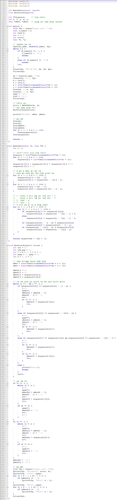

Smith–Waterman algorithm
The Smith–Waterman algorithm performs local sequence alignment; that is, for determining similar regions between two strings of nucleic acid sequences or protein sequences. Instead of looking at the entire sequence, the Smith–Waterman algorithm compares segments of all possible lengths and optimizes the similarity measure.
Needleman–Wunsch algorithm
The Needleman–Wunsch algorithm is an algorithm used in bioinformatics to align protein or nucleotide sequences. It was one of the first applications of dynamic programming to compare biological sequences.
First construct a grid such as one shown in Figure 1 above. Start the first string in the top of the third column and start the other string at the start of the third row. Fill out the rest of the column and row headers. There should be no numbers in the grid yet.
Next, decide how to score each individual pair of letters. The letters may match, mismatch, or be matched to a gap (a deletion or insertion (indel):
Start with a zero in the second row, second column. Move through the cells row by row, calculating the score for each cell. The score is calculated by comparing the scores of the cells neighboring to the left, top or top-left (diagonal) of the cell and adding the appropriate score for match, mismatch or indel. Calculate the candidate scores for each of the three possibilities: The path from the top or left cell represents an indel pairing, so take the score of the left and the top cell, and add the score for indel to each of them. The diagonal path represents a match/mismatch, so take the score of the top-left diagonal cell and add the score for match if the corresponding bases in the row and column are matching or the score for mismatch if they do not. The resulting score for the cell is the highest of the three candidate scores.
The cell has three possible candidate sums:
The cell which gave the highest candidate score must also be recorded.
Code (implementation of Needleman–Wunsch algorithm)
